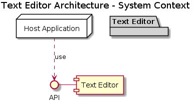
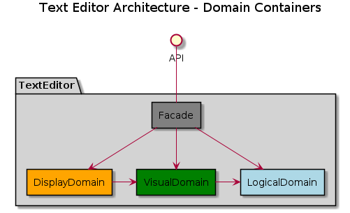
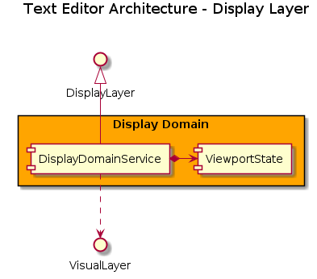
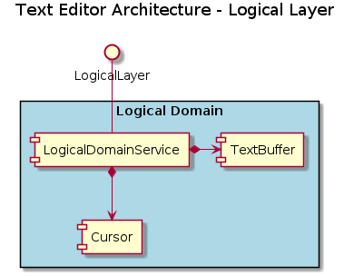

2. Architecture¶
2.1. Introduction¶
2.1.1. Purpose¶
This document describes the internal structure of the Text Editor Engine. Where the Software Requirements Specification (SRS) defines what the system must do from the outside, this document defines how the system is structured internally to fulfil those requirements.
Specifically, this document records: the domain decomposition of the system, the responsibilities and boundaries of each component, the contracts between components, and the rationale behind significant structural decisions. It does not restate requirements, it references them.
2.1.2. Scope¶
This document covers the entire Text Editor Engine: the public-facing TextEditor facade and all
internal components. It does not cover host application concerns such as rendering, input handling,
or file I/O. These are explicitly outside the engine’s boundary (see Explicitly Out of Scope).
2.1.3. Intended Audience¶
The primary audience is the author, both as engine implementer and as future host application integrator. The engine implementer should read the document in full. The host application integrator should focus on the public API (Public API (Facade Interface)) and the out-of-scope boundary (Explicitly Out of Scope).
2.1.4. Relationship to Other Documents¶
Software Requirements Specification (SRS): Requirements - defines the behavioural contract this architecture must satisfy. This document references requirements but does not reproduce them.
Component Descriptions: individual component pages under Components.
Architectural Decisions: individual decision pages under Architectural Decisions.
Code (C4 Level 4): class diagrams and method-level interface contracts: Code (C4 Level 4).
Glossary: shared terminology for all architecture documents: Glossary.
2.1.5. References¶
Facade Pattern: https://refactoring.guru/design-patterns/facade
C4 Model (context/container/component diagrams): https://c4model.com/
UML 2.5.1 Specification: https://www.omg.org/spec/UML/2.5.1/PDF/
SOLID Principles: https://en.wikipedia.org/wiki/SOLID
2.1.6. Document Conventions¶
Diagram color-coding: Architectural diagrams use a consistent color scheme to distinguish domains: Logical Domain (blue), Visual Domain (green), Display Domain (orange), Facade (grey).
Naming convention: Component names use
PascalCase. Internal functions and variables follow Python’ssnake_case.Dependency arrows: In all component diagrams, arrows point in the direction of dependency (from the dependent toward the thing it depends on), not in the direction of data flow.
“Component” vs. “class”: This document uses component to mean a named unit of architectural responsibility. Whether a component is realised as a class, a module, or a set of pure functions is an implementation not assumed here.
C4 levels: This document follows the C4 model hierarchy. The engine is within the System; its three domains are Containers; the modules within each domain are Components, which are made up of Classes, Functions and Code. See C4 Model for the rationale for adopting this model.
Coordinate Notation: Coordinates that are relative to lines (logical or visual) are written with brackets
(line, col). Coordinates that are relative to the window are written as with square brackets[x, y]. This is to distinguish between coordinate systems.
2.2. Architectural Goals and Constraints¶
2.2.1. Goals¶
Single Responsibility per Container: Each domain has a single responsibility. If a container’s responsibility cannot be described in one sentence without the word “and”, it is doing too much.
Rationale: Prevents the spread of concerns and makes the architecture easier to understand and maintain.
Strict Unidirectional Dependencies: Dependencies flow in one direction only: from higher domains toward lower domains. No component in the Logical Domain may depend on anything in the Visual or Display Domain. This is an absolute rule, not a guideline.
Rationale: Enforces testability (each domain can be tested in isolation and mocked), replaceability (a domain can be rewritten without affecting domains below it), and prevents circular coupling.
Pure Logic and Determinism: The engine is a pure-logic system. Given the same initial state and the same sequence of operations, it always produces the same output. It has no side effects beyond its own internal state: no I/O, no randomness, no time-dependence.
Rationale: Makes all behaviour unit-testable and all bugs reproducible.
Single Responsibility per Component: Each component within a domain owns one clearly statable concern. If a component’s responsibility cannot be described in one sentence without the word “and”, it is doing too much.
Rationale: The multi-coordinate cursor system creates natural pressure toward coupling. Strict single responsibility keeps coordinate translation localised and prevents it from spreading across components.
Testability Without a Host: Every component and every code path must be exercisable by a unit test that does not instantiate any GUI framework, terminal library, or external dependency.
Rationale: See Software Quality Attributes.
Performance: Text manipulation, cursor tracking, and visual wrapping must remain performant during rapid host-application input loops. See Performance Requirements.
2.2.2. Constraints¶
Language: Implemented entirely in Python.
Threading: Single-threaded. No concurrency model is defined or supported.
Deployment unit: The engine is provided as a single importable module.
TextEditoris the sole public entry point. Deployment Unit (NFREQ-DEPLOY-201)Dependencies: Python Standard Library only. No third-party packages. (Test dependencies such as
pytestandhypothesisare exempt from this constraint.)UI/IO independence: The engine must not depend on any GUI framework, terminal library, or
stdin/stdout. All rendering and input capture are the host application’s responsibility. See User Input (NR-CURSOR-102), Rendering & I/O (NR-MODE-101).No state persistence: The engine does not read from or write to disk. See State Persistence (NR-INIT-102).
2.2.3. Architecturally Significant Requirements¶
These requirements have a disproportionate influence on structure and are highlighted here because they constrain or directly motivate specific architectural decisions.
Four-Coordinate Cursor System (Valid Coordinate Ranges (INV-CURSOR-001)): The cursor must be tracked consistently across Absolute Index, Logical, Visual, and Window coordinate spaces. This is the most structurally complex requirement in the system and is the primary reason the domain boundary between Visual and Display exists. (See Display Domain.)
Non-Destructive Visual Wrapping (Non-Destructive Wrapping (FR-WRAP-001)): Line wrapping is a visual transformation and must never mutate the underlying text buffer. This requirement mandates that the Logical Domain is unaware of wrap state.
Configurable Display Geometry (Defined Display Width (INV-WRAP-001), Display Dimensions (INV-VIEW-001), ScrollOff Constraint (INV-VIEW-002)): Width, height, and scrolloff must be runtime-configurable. The Domains must hold no hardcoded geometry assumptions.
2.2.4. Explicitly Out of Scope¶
The following concerns are deliberately excluded from the engine. The host application is responsible for all of the below.
Rendering and display output
Keyboard and mouse input capture
File I/O and state persistence
Clipboard operations
Undo/redo history
Syntax highlighting
2.3. System Context¶
2.3.1. System Context Diagram¶

2.3.2. Public API (Facade Interface)¶
The TextEditor class is the sole public surface of the engine. All host application interaction
passes through it. Internal components are not part of the public API and may change without notice.
The engine guarantees that after every public method call, all internal state is consistent. The caller never observes a partially-updated state.
- Initialisation
The engine is configured at construction time with display geometry (width, height, scrolloff). Text content and cursor position may optionally be seeded. After construction the engine is in a fully valid state. (System Initialization)
- Mutation Commands
Operations that modify the text buffer (
insert,delete,backspace). The cursor may be updated as a consequence. The engine does not expose partial results mid-mutation. (Text Buffer & Manipulation)- Cursor Movement
Operations that reposition the cursor without modifying text (
move_up,move_down,move_left,move_right,move_home,move_end). Movement at a boundary is a no-op. (Cursor & Movement)- Cursor Query
Returns the current cursor position in a caller-specified coordinate space. See Coordinate Systems & Output Modes. (Cursor & Movement)
- Content Query
Returns the current text content in a caller-specified form (logical lines, visual lines, or display lines). (Output Modes)
See also
Full method signatures, parameters, and return types: Code (C4 Level 4).
2.4. Containers¶
2.4.1. Domain Layer Model¶
The engine is divided into three layered domains. Each domain depends only on the one domain directly below it and is completely independent of the domains above it.
Note
Each domain is represented at runtime by a domain service (e.g. VisualDomainService), which owns the domain’s
internal components and is the sole point of contact for the layer above. This makes each domain independently
instantiable and unit-testable in isolation. The C4 container level is used here because it accurately captures
this boundary structure.
The domains are not separately deployable processes; they are bounded objects within a single Python module. See C4 Model.
Note
Because each domain is represented by a single domain service instance, the domain service
interface is the natural mock boundary for unit testing. A test for the Display Domain can
supply a mock VisualDomainService without instantiating the Visual or Logical Domains.
The same principle applies at every layer boundary.
Data flows up through the layers in response to queries. Commands flow down: the caller
instructs a domain, which delegates further down as needed. No domain notifies the domain above it
of a change. It is the caller’s responsibility (ultimately the TextEditor facade) to re-query
after a mutating operation.
Within each domain, components are either stateful (they own and mutate data) or stateless calculators (pure functions with no owned state).
A single public-facing class, TextEditor, acts as the Facade: it is the only entry point for
host applications, owns references to all internal components, and is responsible for coordinating
cross-domain operations.
Domain responsibilities:
LogicalDomain: Owns the raw text string its line index, and the cursor. All mutations to text content occur here. This is the single source of truth for text and cursor position.
VisualDomain: Requests raw text from the Logical Domain and applies visual transformations (line wrapping). Does not mutate text directly, it passes mutation requests down to the Logical Domain. Translates between Visual and Logical coordinates.
DisplayDomain: Manages window geometry and tracks the cursor in Window coordinates. Determines which subset of visual lines is returned to the host. If cursor movement causes the viewport to scroll, the Visual Domain is unaffected. Does not mutate cursor or text directly, it passes movement requests down to the Visual Domain. Translates between Window and Visual coordinates.
2.4.2. Coordinate Systems & Output Modes¶
The cursor exists simultaneously in four coordinate spaces. Each domain is responsible for translating between the spaces it owns. The four spaces map directly onto the domain structure and onto the output modes exposed by the public API (See Output Modes).
Output Mode |
Domain |
Coordinate |
Meaning |
|---|---|---|---|
Raw |
Logical |
Absolute Index |
Offset in characters from the start of the raw text string |
Logical |
Logical |
|
Zero-based line number and column within that line |
Wrapped |
Visual |
|
Zero-based row in the full list of visual lines after wrapping |
Display |
Display |
|
column and row within the visible window |
2.4.3. Container Diagram¶

2.4.4. Data Flow: Representative Examples¶
Insert¶
![@startuml
participant Host as App #white
participant "Text Editor" as Facade
participant "Display Domain" as DD #orange
participant "Visual Domain" as VD #green
participant "Logical Domain" as LD #lightblue
App -> Facade : ""insert(text)""
activate Facade
Facade -> DD : ""insert(text)""
deactivate Facade
activate DD
DD -> VD : ""insert(text)""
activate VD
VD -> LD : ""insert(text)""
deactivate VD
DD -> VD : ""get_cursor()""
activate DD
activate VD
VD -> LD : ""get_cursor()""
activate LD
return ""abs_index""
VD -> VD : ""translate(abs_index)""
activate VD
return ""visual_cursor""
return ""visual_cursor""
DD -> DD : ""update_window()""
deactivate DD
deactivate DD
@enduml](../../_images/plantuml-3bee4c78b2e1d12c217fa16c5ce5b1ff4d4ebe28.png)
Delete¶

Backspace¶
![@startuml
participant Host as App #white
participant "Text Editor" as Facade
participant "Display Domain" as DD #orange
participant "Visual Domain" as VD #green
participant "Logical Domain" as LD #lightblue
App -> Facade : ""backspace()""
activate Facade
Facade -> DD : ""backspace()""
deactivate Facade
activate DD
DD -> VD : ""backspace()""
activate VD
VD -> LD : ""backspace()""
deactivate VD
DD -> VD : ""get_cursor()""
activate DD
activate VD
VD -> LD : ""get_cursor()""
activate LD
return ""abs_index""
return ""visual_cursor""
DD -> DD : ""update_window()""
deactivate DD
deactivate DD
@enduml](../../_images/plantuml-d134ab875978aedc2cd1fa2a3311e4fdee438dba.png)
Move Horizontally¶
![@startuml
participant Host as App #white
participant "Text Editor" as Facade
participant "Display Domain" as DD #orange
participant "Visual Domain" as VD #green
participant "Logical Domain" as LD #lightblue
App -> Facade : ""move_left()""
activate Facade
Facade -> DD : ""move_left()""
deactivate Facade
activate DD
DD -> VD : ""move_left()""
activate VD
VD -> LD : ""move_left()""
deactivate VD
DD -> VD : ""get_cursor()""
activate DD
activate VD
VD -> LD : ""get_cursor()""
activate LD
return ""abs_index""
VD -> VD : ""translate(abs_index)""
activate VD
return ""visual_cursor""
return ""visual_cursor""
deactivate DD
DD -> DD : ""update_window()""
deactivate DD
deactivate DD
@enduml](../../_images/plantuml-a8c14cb72e2325474ac5cac23bd8a87e3402c99c.png)
Move Vertically¶
![@startuml
participant Host as App #white
participant "Text Editor" as Facade
participant "Display Domain" as DD #orange
participant "Visual Domain" as VD #green
participant "Logical Domain" as LD #lightblue
App -> Facade : ""move_up()""
activate Facade
Facade -> DD : ""move_up()""
deactivate Facade
activate DD
DD -> VD : ""move_up()""
activate VD
VD -> LD : ""get_cursor()""
activate LD
return ""abs_index""
VD -> VD : ""move_up(abs_index)""
activate VD
return ""new_abs_index""
VD -> LD : ""set_cursor(new_abs_index)""
deactivate VD
DD -> VD : ""get_cursor()""
activate DD
activate VD
VD -> LD : ""get_cursor()""
activate LD
return ""abs_index""
VD -> VD : ""translate(abs_index)""
activate VD
return ""visual_cursor""
return ""visual_cursor""
deactivate DD
DD -> DD : ""update_window()""
deactivate DD
deactivate DD
@enduml](../../_images/plantuml-07560be90c733706dd14c8a9c46c7fb9c9310261.png)
Get Lines¶
![@startuml
participant Host as App #white
participant "Text Editor" as Facade
participant "Display Domain" as DD #orange
participant "Visual Domain" as VD #green
participant "Logical Domain" as LD #lightblue
Group get Display Lines
App -> Facade : ""get_lines()""
activate Facade
Facade -> DD : ""get_lines()""
activate DD
DD -> VD : ""get_lines()""
activate VD
VD -> LD : ""get_lines()""
activate LD
return ""logical_lines""
return ""visual_lines""
return ""display_lines""
return ""display_lines""
end
Group Get Visual Lines
App -> Facade : ""get_visual_lines()""
activate Facade
Facade -> VD : ""get_lines()""
activate VD
VD -> LD : ""get_lines()""
activate LD
return ""logical_lines""
return ""visual_lines""
return ""visual_lines""
end
Group Get Logical Lines
App -> Facade : ""get_logical_lines()""
activate Facade
Facade -> LD : ""get_lines()""
activate LD
return ""logical_lines""
return ""logical_lines""
end
Group Get Raw Text
App -> Facade : ""get_raw_text()""
activate Facade
Facade -> LD : ""get_raw_text()""
activate LD
return ""raw_text""
return ""raw_text""
end
@enduml](../../_images/plantuml-f7877c9298e55d3b5d891ced5b71fdc1c76f4249.png)
Get Cursor¶
![@startuml
participant Host as App #white
participant "Text Editor" as Facade #lightGray
participant "Display Domain" as DD #orange
participant "Visual Domain" as VD #green
participant "Logical Domain" as LD #lightBlue
group Get Display Cursor
App -> Facade : ""get_cursor()""
activate App
activate Facade
Facade -> DD : ""get_cursor()""
activate DD
DD -> VD : ""get_cursor()""
activate VD
VD -> LD : ""get_cursor()""
activate LD
return ""abs_index""
return ""visual_cursor""
return ""display_cursor""
return ""display_cursor""
deactivate App
end
group Get Visual Cursor
App -> Facade : ""get_visual_cursor()""
activate App
activate Facade
Facade -> VD : ""get_cursor()""
activate VD
VD -> LD : ""get_cursor()""
activate LD
return ""abs_index""
return ""visual_cursor""
return ""visual_cursor""
deactivate App
end
group Get Logical Cursor
App -> Facade : ""get_logical_cursor()""
activate App
activate Facade
Facade -> LD : ""get_logical_cursor()""
activate LD
return ""logical_cursor""
return ""logical_cursor""
deactivate App
end
group Get Absolute Index
App -> Facade : ""get_absolute_index()""
activate App
activate Facade
Facade -> LD : ""get_cursor()""
activate LD
return ""abs_index""
return ""abs_index""
deactivate App
end
@enduml](../../_images/plantuml-025239d85b34117eee3bba182e1d6beb9cd0afce.png)
2.5. Components¶
2.5.1. Component Diagrams¶

![@startuml
title Text Editor Architecture - Visual Domain [Component]
interface VisualLayer as "\nVisualLayer"
interface LogicalLayer
rectangle "Visual Domain" #Green {
component "VisualDomainService" as VDS
'Stateful (Orchestrator / domain facade)
component "MovementResolver" as MR
'Stateless (pure calculator, no owned state)
component "VisualLogicalAdapter" as VLA
'Stateful (owns display_width and wrapping map)
'Sole contact point with the Logical Domain
}
VDS -up-|> VisualLayer
VLA ..> LogicalLayer : " adapts"
VDS *--> VLA : "mutations\nvisual line reads"
VDS o-> MR : "resolve movement\n(passes visual lines)"
note top of MR
Receives visual lines as parameters
from VisualDomainService.
No direct dependency on any component.
end note
@enduml](../../_images/plantuml-83659a3fc61ca42f9624643311d86fb5a115e5ac.png)

2.5.2. Component Descriptions¶
Text Buffer holds the raw text string.
Logical Domain Service tracks the raw text in Logical coordinates.
Visual-Logical Adapter adapts the LogicalDomain into the VisualDomain.
CursorState tracks the cursor position.
Movement Resolver computes visual coordinates, given a direction.
Visual Domain Service tracks the text and cursor in Visual coordinates.
Viewport State truncates the visual lines to fit the window.
Display Domain Service tracks the text and cursor in Display coordinates.
TextEditor coordinates cross-domain operations.
2.5.3. Internal Interfaces¶
Key contracts between internal components are recorded here. Full per-component interface details are in Component Descriptions.
Visual → Logical: The Visual Domain queries the Logical Domain for the raw text string. and Cursor position. It does not instruct the Logical Domain on how to store or represent text.
Display → Visual: The Display Domain queries the Visual Domain for the total number of wrapped visual lines and the current cursor visual position. It receives counts and indices, never raw text. Raw text does not cross the Display domain boundary.
Intra-domain: Components within the same domain follow the same unidirectional rule. A component may depend on another component in the same domain, but not the reverse. For example, within the Visual Domain,
Cursormay request data from and depend onLineWrapper, butLineWrappermust not depend onCursor.No cross-domain direct calls: Internal components do not call components in non-adjacent domains. (The Display Domain is unaware of the Logical Domain.) Each domain exposes a single internal interface (a domain service). Internal coordination within a domain is the domain service’s responsibility. This rule applies to components within domains; the
TextEditorfacade is the designated cross-domain coordinator and is explicitly exempt. (See Layer Reads.)
2.6. Code (C4 Level 4)¶
The Code level describes the internal structure of individual components: class diagrams, method signatures, and the interface contracts that components publish to one another. This is the level at which implementation begins.
See also
Full class diagrams, method signatures, and interface contracts: Code (C4 Level 4).
2.7. Architectural Decisions¶
2.8. Error Contract¶
The engine uses standard Python exception types. No custom exception hierarchy is defined.
The TextEditor facade is the sole exception boundary visible to the host application.
See also
The full error contract is maintained in Error Contract.
Exception |
When raised |
|---|---|
|
A parameter is of the wrong Python type (e.g. a float |
|
A parameter has the correct type but an invalid value (e.g. a negative |
|
A cursor or index position is outside the valid range for the current buffer state. |
2.9. Open Questions¶
2.9.1. Unresolved Questions¶
There are no open architectural questions at this time.
2.9.2. Known Limitations¶
Single-threaded only. No concurrency primitives are used. The engine is not safe to call from multiple threads simultaneously.
In-memory only. The entire text buffer is held in memory. There is no streaming or paging for large documents.
Resize Behavior: The requirements Display Dimensions (INV-VIEW-001) and Defined Display Width (INV-WRAP-001) define that display_width and display_height are defined once at initialization and cannot be changed. Dynamic resizing is not supported.
2.9.3. Future Evolution¶
2.10. Appendix A: Glossary¶
2.11. Appendix B: Revision History¶
Revision History: Architecture revision history.
2.12. Appendix C: Supporting Documents¶
Error Contract: full error contract and per-operation failure modes.